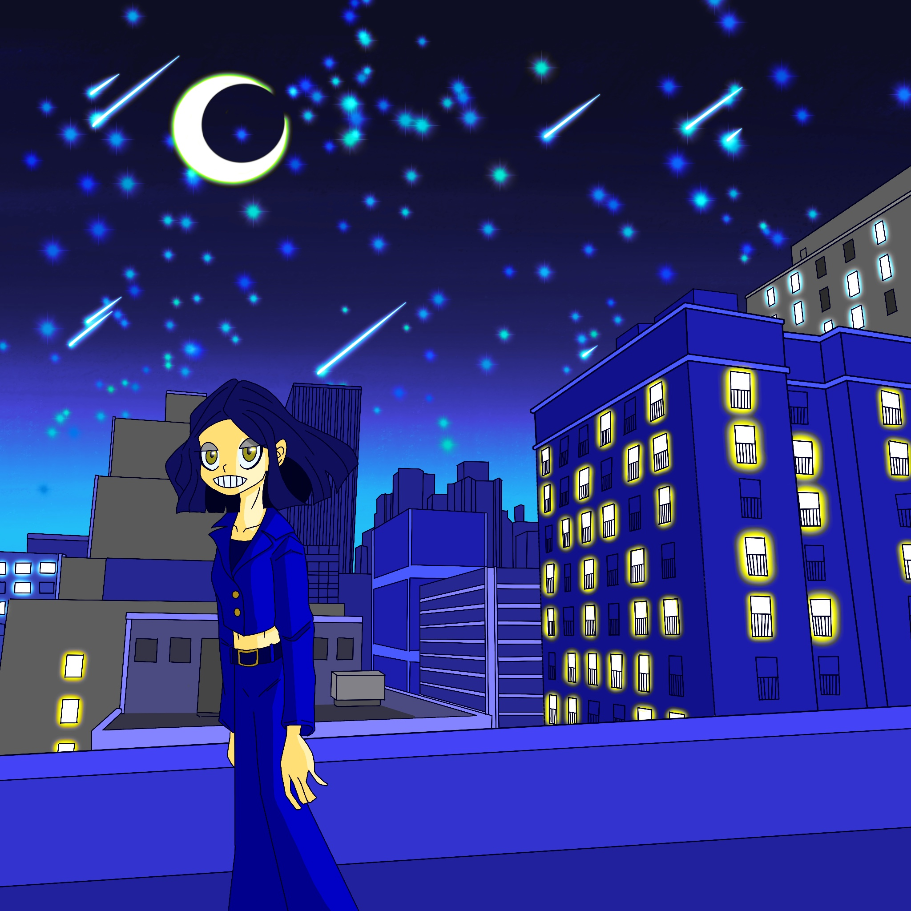
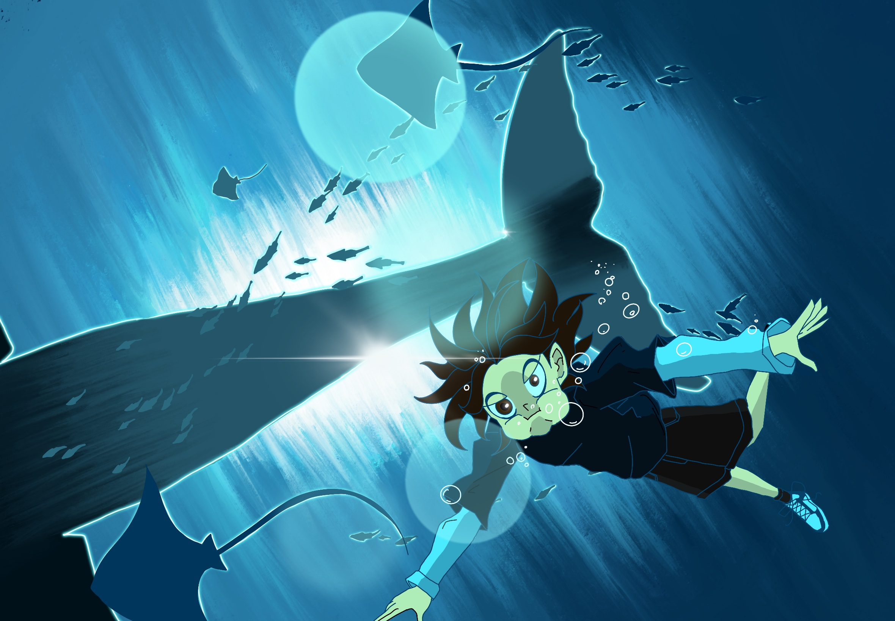

Bule Moon
月の光は、人を美しく輝かせることをテーマにしています。

Deep Bule
物事を深く考えすぎると、暗く見えない世界まで行ってしまうことをテーマにしています。

Future Change
未来はいつでも自分で変えられることをテーマにしています。

World Full Of Blue And Green
青と緑で満ちた世界です。
生き物も科学も、いつかは海や自然に帰ることをテーマにしています。